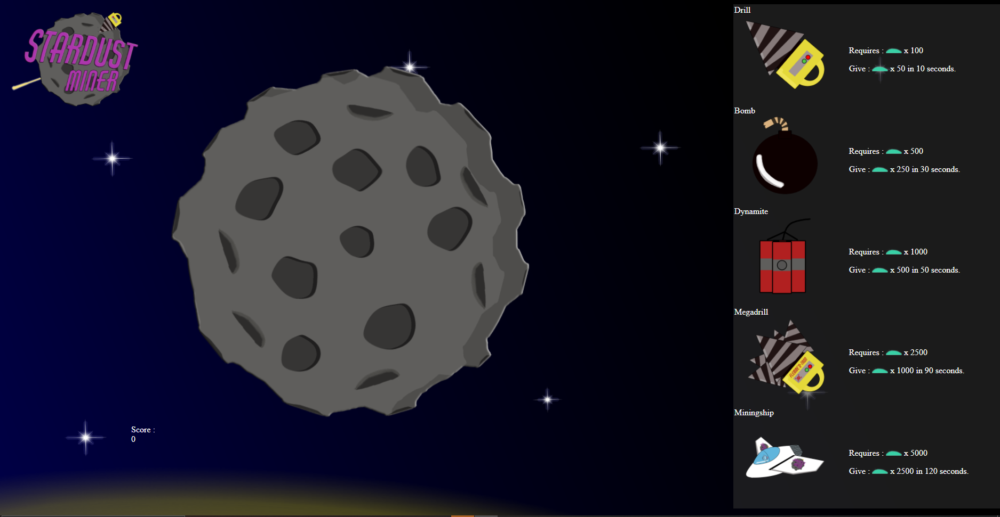
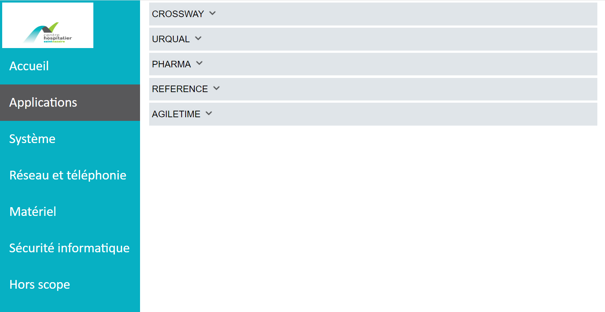

Dans le cadre de notre formation, nous avons eu pour projet de créer un site intéractif de la manière que nous préférions. Nous avons choisi avec mon groupe de créer un projet de clicker, un genre de jeu vidéo nécessitant de cliquer pour gagner une monnaie afin d'améliorer des statistiques. Ce projet a été réalisé avec Erwan Denais
Lors de ma première année de bts, j'ai effectué mon stage à l'hôpital de Saint-Nazaire. Ma mission était de créer un site web qui permettrait de faciliter le travail du personnel d'astreinte en facilitant l'accès des informations et documents impoprtants.
 Voir le rapport de stage